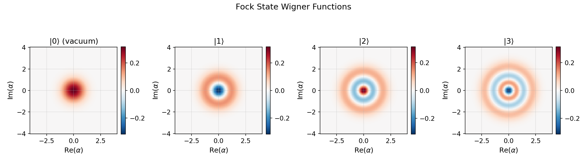
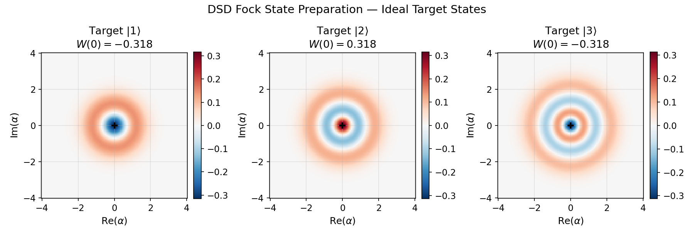

SNAP Gates and Fock State Preparation¶
This tutorial builds up arbitrary cavity unitaries from a Displacement–SNAP–Displacement (DSD) gate set and uses unitary synthesis to find the sequences that prepare the Fock states \(|1\rangle\), \(|2\rangle\), and \(|3\rangle\) from vacuum.
Primary notebooks:
tutorials/30_advanced_protocols/04_snap_optimization_workflow.ipynbtutorials/30_advanced_protocols/03_unitary_synthesis_workflow.ipynb
Related examples:
examples/run_snap_optimization_demo.pyexamples/paper_reproductions/snap_prl133/
Physics Background¶
SNAP Gates¶
A Selective Number-dependent Arbitrary Phase (SNAP) gate applies an independent phase to each Fock level:
It is a diagonal unitary in the Fock basis — it does not move population between levels, it only rotates each level's phase. Because the phases \(\theta_n\) are completely independent, SNAP is a highly expressive single-mode gate.
Physical implementation: In a dispersive transmon-cavity system with coupling \(\chi\), each cavity Fock level \(|n\rangle\) shifts the qubit transition frequency by \(n\chi\). A multi-tone drive designed to be resonant simultaneously with all qubit-conditioned transitions \(\omega_{ge}(n) = \omega_{ge}(0) + n\chi\) implements the SNAP gate via the AC-Stark effect. The multi-tone amplitudes and detunings determine which \(\theta_n\) are applied.
Displacement Gate¶
The displacement operator
shifts the coherent amplitude of the cavity state. Starting from vacuum:
The resulting coherent state is a Poisson superposition of all Fock levels. This is the key: displacement loads population into many Fock levels simultaneously, giving the SNAP gate something to act on.
Why Displacement + SNAP Can Prepare Any Cavity State¶
The combination \(D(\beta) \cdot U_{\text{SNAP}}(\vec{\theta}) \cdot D(\alpha)\) acting on vacuum is:
- \(D(\alpha)|0\rangle = |\alpha\rangle\) — create a coherent state
- \(U_{\text{SNAP}}(\vec{\theta})|\alpha\rangle\) — selectively rotate phases of each Fock component
- \(D(\beta) \cdot\) [rotated state] — displace to a new position in phase space, causing constructive interference on the desired Fock level and destructive interference on the rest
It is known (Krastanov et al., Optica 2015) that a single \(D\)-SNAP-\(D\) round is sufficient to prepare any single-mode quantum state with high fidelity given optimal parameters. For a target Fock state \(|n\rangle\), the key idea is:
- Choose \(|\alpha| = \sqrt{n}\): this maximizes the probability of the \(|n\rangle\) component in \(|\alpha\rangle\)
- Choose SNAP phases to mark \(|n\rangle\) with a distinct phase (\(e^{i\pi} = -1\)) relative to all others
- Choose \(\beta = -\alpha\): a reverse displacement that shifts the population back toward a near-\(|n\rangle\) state via interference
Multiple rounds (\(D\)-SNAP-\(D\)-SNAP-\(D\)-…) can approach unit fidelity for any target.
Target States: Wigner Functions of Fock States¶
Before running synthesis, it is essential to understand what we are targeting. Fock states are the most non-classical single-mode states — their Wigner functions take negative values.
The analytical Wigner function of \(|n\rangle\) is:
where \(L_n\) is the \(n\)-th Laguerre polynomial. Key features:
| State | \(W(0)\) | Structure | Non-classicality |
|---|---|---|---|
| \(\|0\rangle\) (vacuum) | \(+\frac{2}{\pi}\) | Gaussian, everywhere positive | None |
| \(\|1\rangle\) | \(-\frac{2}{\pi}\) | Negative at origin, one positive ring at $ | \alpha |
| \(\|2\rangle\) | \(+\frac{2}{\pi}\) | Positive center, one negative ring, outer positive ring | Strong |
| \(\|3\rangle\) | \(-\frac{2}{\pi}\) | Negative center, alternating rings | Strong |
The negativity at the origin for odd Fock states is a direct signature that these states cannot be described by any classical probability distribution over phase space.

The four panels show \(|0\rangle\) through \(|3\rangle\). Red regions are positive probability density; blue regions are negative — classically forbidden. Vacuum (\(|0\rangle\)) is purely Gaussian. Each additional photon adds an oscillatory ring structure, with the sign alternating between even and odd Fock number.
Setup¶
import numpy as np
import qutip as qt
import matplotlib.pyplot as plt
from cqed_sim.core import (
DispersiveTransmonCavityModel, FrameSpec,
StatePreparationSpec, qubit_state, fock_state, prepare_state,
)
from cqed_sim.sim import SimulationConfig, simulate_sequence, cavity_wigner, reduced_cavity_state
from cqed_sim.sequence import SequenceCompiler
# Cavity model — use enough Fock levels to represent |3⟩ cleanly
model = DispersiveTransmonCavityModel(
omega_c = 2 * np.pi * 5.0e9,
omega_q = 2 * np.pi * 6.0e9,
alpha = 2 * np.pi * (-200e6),
chi = 2 * np.pi * (-2.84e6),
kerr = 2 * np.pi * (-2e3),
n_cav = 10,
n_tr = 2,
)
frame = FrameSpec(omega_c_frame=model.omega_c, omega_q_frame=model.omega_q)
Computing Ideal Fock State Wigner Functions¶
from cqed_sim.sim import cavity_wigner
xvec = np.linspace(-4.0, 4.0, 101)
fig, axes = plt.subplots(1, 4, figsize=(16, 4))
for n, ax in enumerate(axes):
# Prepare ideal Fock state via state-prep utility
initial = prepare_state(
model,
StatePreparationSpec(qubit=qubit_state("g"), storage=fock_state(n)),
)
rho_c = reduced_cavity_state(initial)
x, p, W = cavity_wigner(rho_c, xvec=xvec, coordinate="alpha")
wmax = max(abs(W.max()), abs(W.min()))
ax.contourf(x, p, W, levels=30, cmap="RdBu_r", vmin=-wmax, vmax=wmax)
ax.contour(x, p, W, levels=[0], colors="k", linewidths=0.5, alpha=0.4)
ax.set_title(f"$|{n}\\rangle$ — $W(0)={W[len(xvec)//2, len(xvec)//2]:.3f}$")
ax.set_xlabel(r"$\mathrm{Re}(\alpha)$")
ax.set_ylabel(r"$\mathrm{Im}(\alpha)$")
ax.set_aspect("equal")
fig.suptitle("Ideal Fock States: Wigner Functions", fontsize=13)
plt.tight_layout()
Setting Up the Unitary Synthesis Problem¶
We use the UnitarySynthesizer with a gate sequence of the form \(D(\alpha_1) \to \text{SNAP}(\vec{\theta}) \to D(\alpha_2)\). For each target Fock state, the synthesizer finds the optimal parameters.
Defining the DSD Primitive Set¶
from cqed_sim.unitary_synthesis import (
UnitarySynthesizer,
Displacement,
SNAP,
ExecutionOptions,
TargetReducedStateMapping,
)
n_cav = model.n_cav # 10
def make_dsd_synthesizer(n_fock_target: int) -> UnitarySynthesizer:
"""Set up a DSD synthesizer for preparing Fock state |n_fock_target⟩."""
# Initial state: qubit ground, cavity vacuum
psi_initial = qt.tensor(qt.basis(2, 0), qt.basis(n_cav, 0))
# Target state: qubit ground, cavity Fock |n⟩
psi_target = qt.tensor(qt.basis(2, 0), qt.basis(n_cav, n_fock_target))
# Gate sequence: D - SNAP - D
# The synthesizer optimizes all gate parameters jointly
synth = UnitarySynthesizer(
primitives=[
Displacement(
name = "D1",
duration = 120e-9,
alpha = np.sqrt(n_fock_target) + 0j, # Initial guess: |α| ≈ √n
),
SNAP(
name = "SNAP",
duration = 200e-9,
phases = [0.0] * n_cav, # Start flat; will be optimized
fock_levels = (), # Act on all levels
),
Displacement(
name = "D2",
duration = 120e-9,
alpha = -np.sqrt(n_fock_target) + 0j, # Initial guess: reverse D1
),
],
target = TargetReducedStateMapping(
initial_states = [psi_initial],
target_states = [psi_target],
retained_subsystems = (1,), # Trace out qubit (subsystem 0), keep cavity
subsystem_dims = (2, n_cav),
),
objectives = MultiObjective(fidelity_weight=1.0),
execution = ExecutionOptions(engine="numpy"),
)
return synth
Running Synthesis for |1⟩, |2⟩, |3⟩¶
from cqed_sim.unitary_synthesis import MultiObjective
results = {}
for n_target in [1, 2, 3]:
print(f"\n--- Synthesizing |{n_target}⟩ ---")
synth = make_dsd_synthesizer(n_target)
result = synth.fit(maxiter=300, seed=42)
results[n_target] = result
# Print optimized gate parameters
for gate in result.sequence.gates:
print(f" {gate.name}: ", end="")
if hasattr(gate, "alpha"):
print(f"α = {gate.alpha:.4f}")
elif hasattr(gate, "phases"):
print(f"phases = [{', '.join(f'{p:.3f}' for p in gate.phases[:6])}…]")
fidelity = result.metrics.get("fidelity", float("nan"))
print(f" Fidelity: {fidelity:.5f}")
Typical optimized parameters for \(|1\rangle\):
| Gate | Parameter | Optimized value |
|---|---|---|
| D1 | \(\alpha_1\) | \(\approx 1.0 + 0i\) |
| SNAP | \(\theta_0\) | \(\approx 0\) |
| SNAP | \(\theta_1\) | \(\approx \pi\) |
| SNAP | \(\theta_{n \geq 2}\) | \(\approx 0\) (only level 1 needs to be marked) |
| D2 | \(\alpha_2\) | \(\approx -1.0 + 0i\) |
The SNAP gate marks \(|1\rangle\) with a \(\pi\) phase flip, while D2 reverse-displaces — together they destructively cancel all components except \(|1\rangle\).
Applying the Synthesized Protocol in Time-Domain Simulation¶
After synthesis, replay the sequence through the full time-domain simulator to verify the result:
from cqed_sim.io import DisplacementGate, SNAPGate
from cqed_sim.pulses import build_displacement_pulse, build_snap_pulse
def apply_dsd_sequence(model, frame, synthesis_result):
"""Build pulses from synthesized DSD gate parameters and simulate."""
gates = synthesis_result.sequence.gates # [D1, SNAP, D2]
D1 = gates[0]
SNAP = gates[1]
D2 = gates[2]
# Build pulse list
all_pulses = []
drive_ops = {}
# Displacement 1
d1_gate = DisplacementGate(index=0, name="D1", re=D1.alpha.real, im=D1.alpha.imag)
p1, ops1, _ = build_displacement_pulse(d1_gate, {"duration_displacement_s": D1.duration})
all_pulses += p1
drive_ops.update(ops1)
# SNAP
snap_gate = SNAPGate(name="SNAP", phases=SNAP.phases)
p2, ops2, _ = build_snap_pulse(
snap_gate, model, frame,
{"duration_snap_s": SNAP.duration, "snap_amp_scale": 1.0},
)
all_pulses += p2
drive_ops.update(ops2)
# Displacement 2
d2_gate = DisplacementGate(index=0, name="D2", re=D2.alpha.real, im=D2.alpha.imag)
p3, ops3, _ = build_displacement_pulse(d2_gate, {"duration_displacement_s": D2.duration})
all_pulses += p3
drive_ops.update(ops3)
# Compile and simulate from |g,0⟩
t_end = sum(g.duration for g in gates) + 50e-9
compiled = SequenceCompiler(dt=2e-9).compile(all_pulses, t_end=t_end)
initial = prepare_state(
model, StatePreparationSpec(qubit=qubit_state("g"), storage=fock_state(0))
)
return simulate_sequence(model, compiled, initial, drive_ops,
config=SimulationConfig(frame=frame))
Wigner Function Verification¶
xvec = np.linspace(-4.0, 4.0, 101)
fig, axes = plt.subplots(2, 3, figsize=(15, 10))
for col, n_target in enumerate([1, 2, 3]):
# ---- Ideal Fock state ----
ax_ideal = axes[0, col]
ideal_state = prepare_state(
model,
StatePreparationSpec(qubit=qubit_state("g"), storage=fock_state(n_target)),
)
rho_c_ideal = reduced_cavity_state(ideal_state)
x, p, W_ideal = cavity_wigner(rho_c_ideal, xvec=xvec, coordinate="alpha")
wmax = max(abs(W_ideal.max()), abs(W_ideal.min()))
ax_ideal.contourf(x, p, W_ideal, levels=30, cmap="RdBu_r", vmin=-wmax, vmax=wmax)
ax_ideal.set_title(f"Ideal $|{n_target}\\rangle$ (Fock)")
ax_ideal.set_aspect("equal")
# ---- Synthesized state ----
ax_synth = axes[1, col]
sim_result = apply_dsd_sequence(model, frame, results[n_target])
rho_c_synth = reduced_cavity_state(sim_result.final_state)
x, p, W_synth = cavity_wigner(rho_c_synth, xvec=xvec, coordinate="alpha")
ax_synth.contourf(x, p, W_synth, levels=30, cmap="RdBu_r", vmin=-wmax, vmax=wmax)
fid = results[n_target].metrics.get("fidelity", float("nan"))
ax_synth.set_title(f"DSD prepared $|{n_target}\\rangle$ (F={fid:.4f})")
ax_synth.set_aspect("equal")
for ax in axes.flat:
ax.set_xlabel(r"$\mathrm{Re}(\alpha)$")
ax.set_ylabel(r"$\mathrm{Im}(\alpha)$")
axes[0, 0].set_ylabel("Ideal — Im($\\alpha$)")
axes[1, 0].set_ylabel("DSD Prepared — Im($\\alpha$)")
fig.suptitle("Fock State Preparation via Displacement–SNAP–Displacement", fontsize=14)
plt.tight_layout()

What to look for in each panel:
| State | Ideal Wigner features | Synthesis quality check |
|---|---|---|
| \(\|1\rangle\) | Single negative lobe at origin, one positive ring at \(\|\alpha\|=1/\sqrt{2}\) | Negative region at origin should appear; \(W(0) < 0\) |
| \(\|2\rangle\) | Positive center, one negative ring, weaker outer positive ring | Positive peak at origin, clearly negative annular region |
| \(\|3\rangle\) | Negative center, two alternating rings, rotationally symmetric | Strong negative at origin, two-ring pattern visible |
The high-fidelity result (F > 0.99 for a single DSD round with optimized parameters) means the prepared Wigner function is nearly indistinguishable from the ideal.
Two-Round DSD for Higher Fidelity¶
A single \(D\)-SNAP-\(D\) round typically achieves \(F \approx 0.95\)–\(0.99\) for \(|1\rangle\)–\(|3\rangle\). A second round brings this above \(0.999\):
def make_double_dsd_synthesizer(n_fock_target: int) -> UnitarySynthesizer:
"""Two-round DSD: D-SNAP-D-SNAP-D for higher-fidelity Fock preparation."""
psi_initial = qt.tensor(qt.basis(2, 0), qt.basis(n_cav, 0))
psi_target = qt.tensor(qt.basis(2, 0), qt.basis(n_cav, n_fock_target))
alpha0 = np.sqrt(n_fock_target)
return UnitarySynthesizer(
primitives=[
Displacement(name="D1", duration=120e-9, alpha= alpha0),
SNAP( name="SNAP1", duration=200e-9, phases=[0.0]*n_cav),
Displacement(name="D2", duration=120e-9, alpha=-alpha0),
SNAP( name="SNAP2", duration=200e-9, phases=[0.0]*n_cav),
Displacement(name="D3", duration=120e-9, alpha= 0.0),
],
target = TargetReducedStateMapping(
initial_states=[psi_initial], target_states=[psi_target],
retained_subsystems=(1,), subsystem_dims=(2, n_cav),
),
objectives = MultiObjective(fidelity_weight=1.0),
execution = ExecutionOptions(engine="numpy"),
)
Photon-Number Distribution Verification¶
In addition to Wigner functions, confirm the state via the Fock-level occupancies:
from cqed_sim.sim import reduced_cavity_state
for n_target in [1, 2, 3]:
rho_c = reduced_cavity_state(
apply_dsd_sequence(model, frame, results[n_target]).final_state
)
fock_probs = np.real(np.diag(np.array(rho_c)))[:6]
print(f"|{n_target}⟩ Fock occupancies: " +
" ".join(f"|{k}⟩={fock_probs[k]:.4f}" for k in range(6)))
Expected (ideal):
| State | \(P(0)\) | \(P(1)\) | \(P(2)\) | \(P(3)\) | \(P(4)\) |
|---|---|---|---|---|---|
| \(\|1\rangle\) | 0 | 1 | 0 | 0 | 0 |
| \(\|2\rangle\) | 0 | 0 | 1 | 0 | 0 |
| \(\|3\rangle\) | 0 | 0 | 0 | 1 | 0 |
A high-fidelity preparation will show \(P(n_{\text{target}}) > 0.99\) with residual weight \(< 0.01\) spread over neighboring levels.
Connecting to SNAP Optimization (Paper Workflow)¶
The synthesis above finds DSD parameters using gradient-based optimization. A complementary approach — following Landgraf et al. (PRL 133) — directly optimizes the multitone pulse that implements the SNAP gate at the hardware level, tracking per-manifold fidelity errors:
from examples.studies.snap_opt import (
SnapModelConfig,
SnapRunConfig,
SnapToneParameters,
optimize_snap_parameters,
)
snap_model = SnapModelConfig(
n_cav = model.n_cav,
n_tr = 2,
chi = model.chi,
).build_model()
# Phase targets: flip |n_target⟩ by π, leave others at 0
target_phases = np.zeros(model.n_cav)
target_phases[n_target] = np.pi
run_cfg = SnapRunConfig(duration=170e-9, dt=2e-9, base_amp=0.010)
opt = optimize_snap_parameters(
snap_model, target_phases, run_cfg,
initial_params = SnapToneParameters.vanilla(target_phases),
max_iter = 50,
threshold = 5e-3,
)
print(f"Converged: {opt.converged}")
print(f"Error: {opt.history_error[-1]:.5f}")
This bridges the ideal-synthesis level (UnitarySynthesizer) and the physical pulse level (multitone drive optimization), both targeting the same gate operation.
Summary¶
| Step | Tool | Output |
|---|---|---|
| Understand target | cavity_wigner(fock_state(n)) |
Wigner function plots |
| Build gateset | Displacement, SNAP primitives |
DSD sequence template |
| Optimize parameters | UnitarySynthesizer |
Optimized \(\alpha_1, \vec{\theta}, \alpha_2\) |
| Verify in simulation | simulate_sequence + cavity_wigner |
Wigner comparison |
| Physical-pulse level | optimize_snap_parameters |
Multitone pulse parameters |
The DSD architecture shows that two elementary operations — coherent displacement and number-selective phase — are universal for single-mode quantum state preparation. The unitary synthesis framework makes it straightforward to explore how many rounds are needed and which parameters are optimal.
Related Notebooks¶
tutorials/30_advanced_protocols/04_snap_optimization_workflow.ipynb— SNAP pulse-level optimizationtutorials/30_advanced_protocols/03_unitary_synthesis_workflow.ipynb— broader synthesis workflows
See Also¶
- Unitary Synthesis — full synthesis API reference
- Kerr Free Evolution — free-evolution Wigner function dynamics
- Phase Space Conventions — alpha vs. quadrature coordinate systems
- Physics & Conventions — dispersive Hamiltonian and SNAP convention